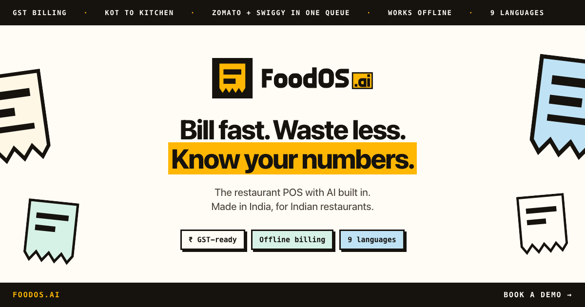

Same og-image.png in every frame below, cropped the way each client crops it.
The card is built so that the logo, headline, sub and chips all sit inside the centred
630-wide column — the only part guaranteed to survive a square thumbnail crop.
1 — The raw crops
What each client is actually cutting out of the 1200×630 file.

1200 × 630 · full — WhatsApp large, LinkedIn, Slack, Facebook2 : 1 centre crop — X / summary_large_image1 : 1 centre crop — WhatsApp / iMessage thumbnails
2 — In the clients
Rough but honest reconstructions: real bubble widths, real card chrome, real crops.
FoodOS.ai — restaurant POS with AI built inBill fast. Waste less. Know your numbers. GST bills, KOT, Zomato and Swiggy in one queue.foodos.ai
have a look at this 👀
FoodOS.ai — restaurant POS…foodos.ai
foodos.ai
WhatsApp · large card + small thumbnail
FoodOS.ai — restaurant POS with AI built infoodos.ai · 2 min read
LinkedIn · feed card
foodos.ai
X · summary_large_image (2:1)
FoodOS.ai — restaurant POS with AI built inBill fast. Waste less. Know your numbers.
Slack · unfurl
FoodOS.ai — restaurant POS with AI built infoodos.ai
2:1 (X) — loses 15px top and bottom. Both ink bands were widened to 52px and 50px
so their type clears the cut; the torn-chit motif takes the trim instead of anything that matters.
1:1 (WhatsApp / iMessage thumbnails) — keeps the logo, both headline lines, the sub
and all three chips. The chit motif is cropped away entirely, which is what it is there for.
At the 84px thumbnail size the headline is unreadable in every design — what has to survive
there is the marigold block and the mark, and both do.